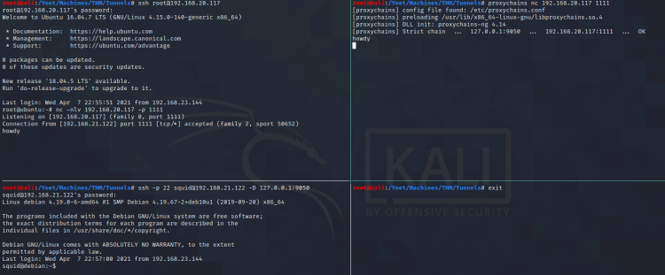

Proxychains
Edit in /etc/proxychains.conf
#Use proxychains to nc into the 192.168.20.117, making it appear as if the connection came from 192.168.21.122
ssh root@192.168.20.117
nc -nlv 192.168.20.117 1111
ssh -p 22 squid@192.168.21.122 -D 127.0.0.1:9050
proxychains nc 192.168.20.117 1111
